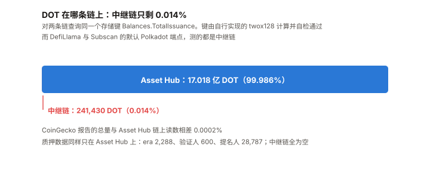
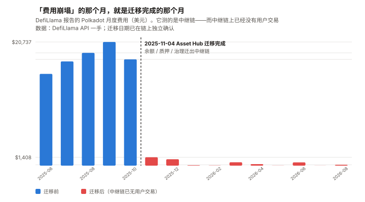
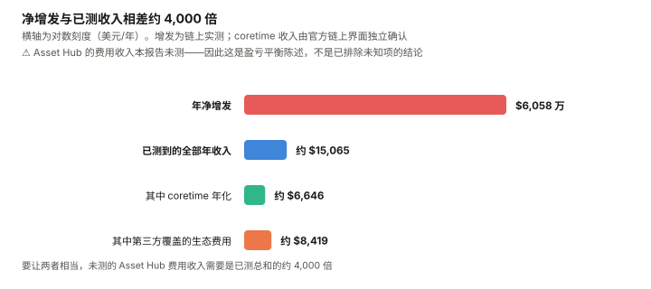

DOT / Polkadot 完整调研与分析报告
编写日期：2026 年 9 月 8 日
数据截止：2026 年 9 月 8 日（8 月完整月度数据已闭合）
研究方法：沿用本系列前九期框架（BTC / ETH / SOL / ADA / BNB / HYPE / UNI / TRX / XIN）。
本期的独特之处：DOT 是本系列第十个资产，也是第一个「主流数据源集体指向了错误的那条链」的资产。
本期为 DOT 首期报告。本期核心发现：
① 2025 年 11 月 4 日，Polkadot 把余额、质押、治理整体迁出了中继链，迁到 Asset Hub。
本报告直接查询两条链的Balances.TotalIssuance：
中继链上只剩 241,430 枚 DOT（占总量 0.014%），Asset Hub 上是 1,701,813,540 枚——
与 CoinGecko 的总量吻合到 0.0002%；
② 而 DefiLlama 与 Subscan 的默认 Polkadot 端点，测的都还是中继链。
DefiLlama 报告的 Polkadot 30 天费用是 $283.24，
且在 2025 年 11 月从 $17,826 骤降到 $1,408（–92%）——
那个「费用崩塌」的月份，正是迁移完成的月份。
能一手证明的是「中继链费用不再是需求的有效度量」；⚠️「需求没崩」本报告证明不了，也没有测；
③ 本报告因此改用链上直接测量。 在 Asset Hub 上按互不重叠的区间逐段年化TotalIssuance，
测得阶梯下调前（2025-12→2026-03）为 7.25%，下调后（2026-03→2026-09）为 3.44%，降幅 –52.5%，
最近 31 天为 3.30%，即年净增约 5,599 万枚 DOT ≈ $6,058 万。
7.25% 与广为引用的「每年 1.2 亿枚 = 7.05%」高度吻合——而它现在已经腰斩；
④ 收入端极端稀薄。 本报告从 Coretime 链解码Broker.SaleInfo：
本轮报价 89 个 core、售出 35 个，地板价 10 DOT，本轮收入 472.43 DOT ≈ $511
（该收入数字由官方链上界面独立确认，与本报告估算差 0.5%）。
加上第三方覆盖的生态费用，已测到的全部年化收入约 $15,065；
⑤ 距 ATH –98.03%（$54.98，2021-11-04），是本系列十个资产里最深的；
而历史最低点 $0.727 就发生在本报告期内的 2026-08-18。本期核心判断：DOT 的问题不是「收入低」，是「增发与收入不在一个数量级」。
年净增发 $6,058 万 vs 已测年收入约 $1.5 万——要让两者相当，本报告未测的 Asset Hub 费用收入
需要是已测总和的约 4,000 倍。
不质押的持有人每年被稀释 3.19%；质押者实际份额年增约 +1.60%（上界 +2.74%）——
质押的收益主要来自抵消稀释。⚠️ 但这个稀释是有限的，这一点初稿漏了：若 21 亿上限成立，
剩余可增发共 3.982 亿枚 = 当前供应的 23.4%，约 7.1 年触顶，且速率在衰减。
本报告最强的多头论据（上限已确立）和最强的空头论据（持续稀释）说的是同一个机制。⚠️ 本期审查改动很大，初稿有四处被推翻：
① 用InactiveIssuance当国库余额是错的——正确字段是Treasury.Deactivated，
而它近 31 天一动没动（初稿写「61 天 +16.3%」）；
② 「比值 900:1 到 9,000:1」的低端算错了一个数量级（应为 92:1），且与同段的「1.1%」自相矛盾；
③ 「四窗口一致」是嵌套窗口的产物，不是四次独立验证；
④ 「不是需求崩塌」是诉诸无知——能证明的只是「中继链数据不再有效」。⚠️ 一处必须先声明的方法变更：本期大量使用直接读取链上存储的方式取数
（自行实现 twox128 并用两个已知哈希自检通过）。
原因是第三方数据源在这个标的上系统性失准——这一点本身就是本期的第一发现。免责声明：本报告不构成任何投资建议。所有分析仅供研究参考，投资决策请咨询专业顾问。
核心结论摘要（一页速览）
| 维度 | 核心判断 |
|---|---|
| DOT 是什么 | 一个出租区块空间的网络。 中继链提供共享安全，平行链通过购买 coretime 获得执行资源。DOT 用于质押、治理与购买 coretime |
| 本期的独特之处 | 第一个「数据源指向错误的链」的资产。 余额、质押、治理已于 2025-11-04 迁至 Asset Hub，而主流数据源仍在测中继链 |
| 当前价格 | $1.082，市值 $18.41 亿（全球第 48）。总量 17.018 亿枚，上限 21 亿枚 |
| 距 ATH | –98.03%（ATH $54.98，2021-11-04）。十个资产里最深 |
| 一个必须先讲的事实 | 历史最低价 $0.727 就出现在本报告期内的 2026-08-18，此后反弹，8 月收 +8.07% |
| 实测净供应增长 | 阶梯前 7.25% → 阶梯后 3.44%，最近 31 天 3.30%（链上互不重叠区间实测）→ 年净增 5,599 万枚 ≈ $6,058 万 |
| 剩余可增发 | 3.982 亿枚 = 当前供应的 23.4%，约 7.1 年触顶（前提：21 亿上限不被改回） |
| 收入 | Coretime 本轮售出 35 / 89，收入 472.43 DOT ≈ $511；已测全部年化收入约 $15,065 |
| 增发 / 收入 | 约 4,000 : 1。 ⚠️ 这是盈亏平衡倍数——Asset Hub 费用收入本报告未测 |
| 质押 | 53.73%（914,460,537 枚，era 2288，一手）。验证人 600，提名人 28,787 |
| 对持有人 | 不质押每年被稀释 3.19%；质押者实际份额年增约 +1.60%，上界 +2.74%（⚠️ 推算，见 5.6） |
| 国库 | 2,431 万枚 DOT ≈ $2,631 万（Treasury.Deactivated）。阶梯式更新，近 31 天为零变化；267 天 +48.2%，占净增发 19.3% |
| Asset Hub 活动 | 出块 1.92 秒，每日约 146,250 笔 extrinsic（链上采样）。⚠️ 其费用收入本报告未测 |
| 生态规模 | 全部平行链 TVL 合计约 $6,314 万，其中 Hydration 一家占 $5,860 万（92.8%） |
| 核心多头逻辑 | 供应上限 21 亿已通过治理确立且阶梯下调已生效；质押率 53.73%；国库仍在积累；技术路线（Asset Hub 迁移）执行完成且无事故 |
| 核心空头逻辑 | 增发与收入差四个数量级；距 ATH –98%；生态 TVL 高度集中于单一平行链；主流数据源失准使问题长期不被看见 |
| 风险等级 | 中等偏高。它的核心问题不是「会不会崩」，而是「一个几乎没有收入的网络，凭什么支撑 3.29% 的持续稀释」 |
1. Polkadot 是什么
1.1 一个出租区块空间的网络
| 组成 | 作用 |
|---|---|
| 中继链（Relay Chain） | 提供共享安全与最终性。它本身不跑用户交易 |
| 平行链（Parachain） | 独立的区块链，向中继链租用执行资源 |
| Coretime | 平行链购买执行资源的产品形态，按 core × 时间段出售 |
| 系统链 | Asset Hub（资产与余额）、Coretime 链、Bridge Hub、Collectives 等 |
DOT 的三重用途：质押（安全）、治理（OpenGov 投票）、购买 coretime。
1.2 2024–2025 的两次结构性改造
| 改造 | 内容 | 时点 |
|---|---|---|
| Agile Coretime | 用「按需购买 core」取代原来的「平行链插槽拍卖」 | 2024 |
| Asset Hub 迁移 | 余额、质押、治理全部从中继链迁到 Asset Hub | 2025-11-04 |
第二项是本报告第 4 章的全部内容，因为它把「Polkadot 的链上数据在哪里」这个问题的答案改了，
而大部分数据源没跟上。
1.3 供应政策：三次治理修改
| 阶段 | 政策 | 依据 |
|---|---|---|
| 2020–2024 | 约 10% 年通胀，无上限 | 原始设计 |
| 2024-11 起 | 通胀模型调整，起始约 8% 并递减 | Ref 1139 |
| 后续 | 固定年发行 1.2 亿枚 DOT | Ref 1271 |
| 2025-09 起 | 总量上限 21 亿枚；自 2026-03-14 起阶梯下调 | Ref 1710 |
⚠️ 以上四行的政策沿革来自二手转述，本报告未逐一打开提案原文。
但它们的净结果是可以直接测量的，第 5 章给出了实测值：年化 3.29%。
实测值与「每年 1.2 亿枚」（约合 7.05%）相差一倍以上——说明阶梯下调确已生效。
2. DOT 的发展阶段划分
阶段一：创世与插槽拍卖（2020–2021）
2020 年 5 月主网上线，8 月完成 1:100 重面额。2021 年起平行链插槽拍卖，
参与者锁仓 DOT 竞拍两年期插槽。2021-11-04 创下历史最高价 $54.98。
阶段二：锁仓退潮（2022–2023）
插槽租期陆续到期，锁仓 DOT 解锁回流。价格进入长期下行。
阶段三：Polkadot 2.0 改造（2024–2025.10）
Agile Coretime 上线，取代插槽拍卖。商业模式从「两年期大额锁仓」变成「按月小额付费」——
这在设计上更合理，但也把一个大额锁定需求换成了一个小额现金需求（见第 6 章）。
阶段四：Asset Hub 迁移（2025-11-04）
余额、质押、治理整体迁出中继链。 官方口径为超过 16.3 亿枚 DOT、150 万以上账户、
5.3 万质押者，无事故完成。⚠️ 该口径为二手。
本报告在链上确认了迁移的结果（第 4 章），但未独立核实迁移过程的上述数字。
阶段五：低价区间与供应上限（2025.11– 至今）
这是本报告的观察窗口。 特征是：
- 价格从 2025-09-08 的 $3.995 跌到 2026-08-18 的历史低点 $0.727，一年跌 73%
- 2026-03-14 起供应阶梯下调生效，实测通胀降至 3.29%
- 中继链费用在数据源上「归零」——实为迁移造成的测量断裂
- 国库（
Treasury.Deactivated）在 267 天里 +48.2%，占净增发的 19.3%；
⚠️ 它是阶梯式更新的，最近 31 天为零变化
3. DOT 当前现状
3.1 价格与市场
| 指标 | 数值 | 口径 |
|---|---|---|
| 现价 | $1.082 | CoinGecko，2026-09-08 13:04 UTC |
| 市值 / 排名 | $18.41 亿 / 第 48 | 同上 |
| 流通量 | 17.018 亿枚 | 与总量几乎相同 |
| 链上总发行量 | 1,701,813,540 枚 | ✅ 本报告直接查询 Asset Hub 存储 |
| 供应上限 | 21 亿枚 | Ref 1710 |
| ATH | $54.98（2021-11-04） | –98.03% |
| ATL | $0.727004（2026-08-18） | 就在本报告期内 |
| 8 月月度（8/1→8/31） | +8.07% | $0.7582 → $0.8195 |
| 近 1 年 | –73.13% | 2025-09-08 为 $3.995 |
| 8 月日成交中位数 | $7,974 万 | 十个资产里第 9 |
3.2 风险特征
过去 365 天日对数收益率，本报告自行计算：
| 指标 | DOT |
|---|---|
| 年化波动率 | 81.5% |
| beta（相对 BTC） | 1.15 |
| 相关系数 | 0.619 |
| R² | 38.3% |
| 单日涨跌 >20% 的天数 | 3 天 |
恒等式自检：R² =（β × σ_BTC ÷ σ_资产）² =（1.15 × 44.2 ÷ 81.5）² = 38.9%，
与实测 38.3% 吻合。该恒等式在 XIN 期建立，这里第二次通过。DOT 是一个「正常」的高 beta 山寨币：R² 38.3% 说明 BTC 能解释它近四成的波动。
这与 XIN 期形成明确对照——XIN 的 R² 只有 2.4%，那是测不出关系；DOT 的低迷是真实的价格发现。
3.3 生态规模
| 平行链 | TVL | 占比 |
|---|---|---|
| Hydration | $5,860 万 | 92.8% |
| Bifrost | $320 万 | 5.1% |
| Astar | $118 万 | 1.9% |
| Moonbeam | $7.8 万 | 0.1% |
| Acala | $6.7 万 | 0.1% |
| Interlay | $1.5 万 | 0.02% |
| 合计 | 约 $6,314 万 | 100% |
全生态 TVL $6,314 万，而 DOT 市值 $18.41 亿——市值是生态 TVL 的 29 倍。
且 92.8% 集中在一条平行链上。
⚠️ TVL 不是衡量 Polkadot 的合适尺子（它不是 DeFi 链），本表用于给量级参照，不用于估值。
⚠️ Asset Hub 本身不在 DefiLlama 的链列表里，因此上表可能低估。
3.4 宏观环境
| 因素 | 状态（9 月初） | 影响 |
|---|---|---|
| 联邦基金利率 | 3.50–3.75% | — |
| 9 月加息概率 | 65.9%（CME FedWatch，8/31） | 利空 |
| PCE 通胀 | 3.7%（12 个月）/ 4.1%（6 个月） | 支持加息 |
| 10 年期美债 | 4.79% | — |
本节沿用与本系列 TRX / UNI / XIN 期同一时点的宏观快照。
DOT 的 R² 38.3% 说明宏观通过 BTC 的传导在它身上是有效的，这一点与 XIN 不同。
4. 所有人都在测错的那条链（本期核心章之一）
本系列前九期踩过四次「口径坑」：ADA 的 L1 费 ≠ 生态合计、ETH 的 blob ≠ L2 全部支出、
TRX 的「费用」被定义成「销毁」、XIN 的官方文档只查了英文版。
本期是第五次，而且性质不同——前四次是「用错了指标」，这次是「测错了链」。
4.1 迁移
2025 年 11 月 4 日，Polkadot 把余额、质押、治理从中继链整体迁到 Asset Hub。
4.2 链上验证

本报告对两条链查询同一个存储键 Balances.TotalIssuance
（键由自行实现的 twox128 计算，并用两个已知哈希 System / Number 自检通过）：
| 链 | Balances.TotalIssuance |
占总量 |
|---|---|---|
| 中继链（rpc.polkadot.io） | 241,430.43 DOT | 0.014% |
| Asset Hub | 1,701,813,157.37 DOT | 99.986% |
| CoinGecko 报告的总量 | 1,701,810,392 | — |
| Asset Hub 与 CoinGecko 的差异 | 0.0002% | — |
质押数据同样只在 Asset Hub 上存在：
| 存储项 | Asset Hub | 中继链 |
|---|---|---|
Staking.CurrentEra |
2,288 | 空 |
Staking.ValidatorCount |
600 | 空 |
Staking.CounterForNominators |
28,787 | 0 |
Staking.MinimumActiveStake |
238.56 DOT | 空 |
中继链上没有质押，没有余额，只剩 0.014% 的 DOT。
4.3 数据源没有跟上

DefiLlama 的 Polkadot 链费用序列：
| 月份 | 费用 |
|---|---|
| 2025-08 | $18,911 |
| 2025-09 | $20,737 |
| 2025-10 | $17,826 |
| 2025-11 | $1,408 |
| 2025-12 | $1,078 |
| 2026-01 | $70 |
| 2026-08 | $145 |
费用「崩塌」的月份是 2025 年 11 月，迁移完成的月份也是 2025 年 11 月。
一个只看这张表的人会得出「Polkadot 的使用量在 2025 年 11 月崩了 92%」——而这张表不足以支持那个结论。
⚠️ 初稿在这里写「不是需求崩塌，是搬走了」，推理审查指出这是诉诸无知，本报告同意并收窄。
能一手证明的是：中继链上只剩 0.014% 的 DOT，因此中继链费用不再是 Polkadot 需求的有效度量。
这一点由机制本身保证，不依赖时间吻合。
不能证明的是「需求没有下滑」——迁移与真实需求下滑可以同时发生，而本报告没有测迁移后的需求。⚠️ 一个反面事实，初稿一字未提：迁移完成之后费用还在继续跌——
$1,408（11 月）→ $1,078 → $70（1 月） → $145（8 月）。
一次性的口径断裂应当表现为水平跃迁，不该在断裂后的九个月里再跌 20 倍。
本报告倾向于认为这是残留中继链活动的进一步萎缩（断裂后的数已在噪声量级），
但这恰恰说明：这张表在 2025-11 之后没有信息量，而不是它证明了需求没崩。而 DefiLlama 的链列表里没有 Polkadot Asset Hub（本报告已核对
allChains），
所以搬去哪里，它没有测；本报告也没有测（见 6.3 末）。
Subscan 的默认 Polkadot 端点同样如此：polkadot.api.subscan.io/api/scan/token
返回 total_issuance = 241,430 DOT——那是中继链的残值，不是 DOT 的供应量。
（Asset Hub 需要换用 assethub-polkadot.api.subscan.io，该端点返回 1,701,813,412 枚，与链上一致。）
4.4 这一章的方法论含义
本期不是「发现了一个错误的数字」，是发现了一类错误。
当一条链把核心功能迁到另一条链上时，所有按链名索引的数据源都会静默地继续返回旧链的数据。
它不报错，它返回一个看起来正常的小数字。本报告因此把第 5 章之后的关键指标全部改为直接读链上存储，
并把这条写进了本系列的方法论（见 10.5）。⚠️ 同时要说明本报告能力的边界：直接读存储解决了「供应、质押、国库」这类
状态量；而流量（费用、交易笔数）需要遍历区块或依赖索引服务，本报告没有做。
因此第 6 章的收入侧仍然依赖 coretime 的定价参数与第三方费用数据，精度低于供应侧。
5. 净供应增长：一手测量（本期核心章之二）
⚠️ 本章标题与内容在发布前审查中被大幅更正。
初稿叫「增发」，而测到的是「净供应增长」（已扣除全部销毁）——两位审查者都指出了这个标签错误。
初稿的「四窗口一致」也被指出是嵌套窗口的产物，不是四次独立验证。以下是修正版。
5.1 为什么要自己测
广为引用的说法是「Polkadot 每年增发 1.2 亿枚 DOT」（Ref 1271 设定的固定发行量），
按当前供应折算约 7.05%。
但 Ref 1710 确立了 21 亿枚上限，并自 2026-03-14 起阶梯下调。下调后的实际发行率，二手来源没有给出可用数字。
5.2 测量方法
在 Asset Hub 上取六个历史区块，读取 Balances.TotalIssuance 与 Timestamp.Now，
按互不重叠的区间逐段年化（初稿用的是共享终点的嵌套窗口，已废弃）：
| 区间 | 天数 | 净增（DOT） | 年化净供应增长 |
|---|---|---|---|
| 2025-12-15 → 2026-03-09 | 84 | 27,443,522 | 7.25% |
| 2026-03-09 → 2026-05-11 | 63 | 10,318,358 | 3.57% |
| 2026-05-11 → 2026-07-09 | 59 | 9,241,692 | 3.40% |
| 2026-07-09 → 2026-08-08 | 30 | 4,545,630 | 3.27% |
| 2026-08-08 → 2026-09-08 | 31 | 4,763,592 | 3.30% |
⚠️ 初稿在这里用了四个共享同一终点（2026-09-08）、且互相嵌套的窗口，
报出「一致到小数点后两位、离散度 0.008pp」，并称之为「做过的最干净的一次测量」。
推理审查指出这是算术上被强制的一致性，不是独立复现：
① 短窗口是长窗口的子集，离散度被机械压缩；
② 四个窗口共享终点，若终点读数有偏，四者会同向同幅偏移，一致性检查对此零灵敏度。
改用互不重叠区间后，后四段的真实离散度是 0.30pp，不是 0.008pp。本报告接受这个批评，并撤回「最干净的一次测量」这个说法。
⚠️ 独立性检验（换第二个 RPC 节点复读同一区块）本期没有做，已列入下期。
5.3 结果：阶梯下调在数据里是可见的
这是初稿没有做、而做了之后结论更强的一步。
| 期间 | 年化净供应增长 |
|---|---|
| 阶梯下调前（2025-12-15 → 2026-03-09） | 7.25% |
| 阶梯下调后（2026-03-09 → 2026-09-08） | 3.44% |
| 降幅 | –52.5% |
| 最近 31 天 | 3.30% |
7.25% 与「每年 1.2 亿枚 = 7.05%」高度吻合——这意味着下调前的实际发行率就是那个广为引用的数字。
而下调后腰斩。初稿只测了下调之后的区间，因此「下调已生效」这个判断只能靠与二手数字比对得出。
补上下调前的区间后，前后对照本身成了一手观测。
⚠️ 但「原因是 Ref 1710」这一步仍然是二手归因——本报告没有打开提案原文核对生效日期。
可以一手说的是「发行率在 2026 年 3 月前后腰斩」，不是「Ref 1710 导致了它」。
当前口径：净供应增长 3.30%/年，即年净增约 5,599 万枚 ≈ $6,058 万。
⚠️ 两条关于测量本身的限定：
① 这是净值，不是毛增发——已扣除手续费销毁与 coretime 销毁（两者量级见第 6 章，极小，因此净≈毛）；
② 中继链与 Asset Hub 之间的 teleport 会一边销毁一边铸造，理论上污染单链读数，
但中继链总量只有 241,430 枚，污染上限被封在总供应的 0.014% 以内，相对每月 476 万枚的净增可忽略。
5.4 一个初稿没算、而它把空头论据封了顶的数字
若 21 亿上限成立：
| 项目 | 值 |
|---|---|
| 当前供应 | 1,701,832,341 枚 |
| 上限 | 2,100,000,000 枚 |
| 剩余可增发 | 398,167,659 枚 |
| 占当前供应 | 23.4% |
| 按当前速率触顶 | 约 7.1 年（不计后续衰减，实际更久） |
⚠️ 这一段是推理审查抓到的最重要的一处，因为它改变了空头论据的量级。
初稿在 10.4 写「3.29% 每年都会发生」「不像大多数风险需要触发条件」——那是永续语气。
而如果上限成立，稀释是一个总量为 23.4% 的有限量，且速率在衰减。报告最强的多头论据（上限已确立）和最强的空头论据（持续稀释）说的是同一个机制，
而初稿从未让前者去约束后者的量级。已修正。⚠️ 前提是上限不被治理改回（见 9.4 第 4 条）——同一个机制两个方向都能走。
5.5 质押
| 指标 | 值 | 来源 |
|---|---|---|
| Era 2288 总质押 | 914,460,537 DOT | ✅ 链上 Staking.ErasTotalStake |
| 质押率 | 53.73% | 本报告计算 |
| Era 2100（约 6 个月前） | 884,513,285 DOT（51.97%） | ✅ 同上 |
| 验证人 / 提名人 | 600 / 28,787 | ✅ 链上 |
| 最低有效质押 | 238.56 DOT | ✅ 链上 |
5.6 对持有人的实际处境
硬数据（不含假设）：
| 项目 | 值 |
|---|---|
| 年化净供应增长 | 3.30% |
| 不质押者的年度份额变化 | –3.19% |
需要一个分配假设的部分：
国库（Treasury.Deactivated，见 7.1）在 267 天里增长 7,907,122 枚，年化约 1,081 万枚，
占净增发的 19.3%——这与 Polkadot 经典的约两成国库分成一致。
其余约 4,518 万枚流向质押者：
| 持有人类型 | 名义年收益 | 实际份额变化 |
|---|---|---|
| 质押并提名 | 约 4.94% | 约 +1.60% |
| 不质押 | 0 | –3.19% |
上界检验（初稿只宣称「方向性结论不依赖假设」，没有证明它）：
即使国库沉淀为零、全部净增发流向质押者，名义收益上界是 6.12%，实际份额变化上界是 +2.74%。
区间 +1.60% 到 +2.74%，两端结论相同：质押的收益主要来自抵消稀释。⚠️ 四条限定（初稿只列了三条，且三条全部指向「高估质押者收益」这一侧）：
① 国库年化基于 267 天，而Treasury.Deactivated是阶梯式更新的（见 7.1），短窗口无意义；
② 未扣验证人佣金；
③ 国库净增 = 流入 − 支出，用它反推流入会低估流入，因而高估质押者份额；
④ 反向的一条，初稿漏了：若部分国库增长来自既有 DOT 转入而非新增发，则扣减扣多了，
质押者份额会往上界那端走。⚠️ 初稿在这里给出的是 +0.83%，那是用错了字段（
InactiveIssuance而非Treasury.Deactivated）算的，已作废。
6. 收入：Coretime（本期核心章之三）
6.1 商业模式
Polkadot 卖的是 core——平行链按「一个 core × 一个 region（约 28 天）」购买执行资源。
销售分三段：Interlude（续租优先）、Lead-in（荷兰式拍卖降价）、固定价段。
⚠️ coretime 收入被销毁（而非进国库）——若成立，它是 DOT 的价值捕获通道。
本报告标为二手，未在链上确认销毁路径。
6.2 本轮销售的链上参数
本报告从 Coretime 链解码 Broker.SaleInfo（SCALE 编码，逐字段手工解析）：
| 字段 | 解码值 |
|---|---|
cores_offered |
89 |
cores_sold |
35 |
end_price（地板价） |
10 DOT |
sellout_price |
13.44 DOT |
region_begin → region_end |
413,565 → 418,605（跨度 5,040，与 Configuration.region_length 一致） |
⚠️ 初稿在这里挂了一个「100 倍未决分歧」：一个第三方来源称单价为 1,000 DOT。
领域审查已用两个独立的一手来源把它解决了：
① 官方链上界面显示本轮 89 个报价、售出 35 个、地板价 10 DOT、本轮收入约 472.43 DOT；
② 一项治理提案明确把地板价设为 10 DOT。
本报告的解码正确，第三方的 1,000 DOT 更可能是旧数据或混入了别的参数。本轮收入的独立数字 472.43 DOT，与本报告按 35 × 13.44 估算的约 470 DOT 相差 0.5%。
⚠️ 但审查同时指出本报告的推理有毛病，这一条要记下来：
「其他字段解对了，所以价格字段也对」不是有效的 SCALE 验证。
本报告当时是对的，但理由是错的——正确的做法是找独立来源，而不是靠字段自洽推断。
⚠️ 另一处方法瑕疵：用cores_sold × sellout_price估收入不严谨，
真实收入应逐笔累加 purchase 与 renewal 的实际付款。本期靠外部数字碰对了，不代表方法对。
6.3 量级对照

| 项目 | 值 |
|---|---|
| 本轮（约 28 天）coretime 收入 | 472.43 DOT ≈ $511 |
| 年化（13 轮） | 约 6,142 DOT ≈ $6,646 |
| DefiLlama 覆盖的全生态 30 天费用 | 约 $692（年化约 $8,419） |
| 已测到的全部年化收入 | 约 $15,065 |
| 年净增发 | $6,058 万 |
| 比值 | 约 4,021 : 1 |
⚠️ 初稿在这里写「比值在 900:1 到 9,000:1 之间」——低端算错了一个数量级。
$6,058 万 ÷ $66 万 = 92，不是 900。而初稿自己上一行就写着「只有年增发的 1.1%」（= 1/92），
两句在同一段里互相矛盾。 该区间已随 6.2 的分歧解决而整体废弃。
替换初稿的「区间两端结论相同」——那个检验测错了参数：
⚠️ 推理审查指出：初稿变动的是 coretime 单价——本报告亲手解码、有两处自洽检查的那个量；
完全没有变动的是 Asset Hub 的实际费用收入——本报告在 11.4 里标为「❌ 未获取」的那个量。
对已知的做敏感性、对未知的不做，然后宣布「区间两端结论相同」，
这不是区间检验，是把不确定性挪到了区间外面。
改用盈亏平衡陈述，它一次封住所有未测项：
要让「净增发 ≈ 全网收入」成立，Polkadot 全网的年收入需达到约 $6,058 万。
而已测到的全部收入合计约 $15,065。
也就是说：本报告未测的 Asset Hub 费用收入，需要是已测总和的约 4,000 倍，结论才会翻转。作为量级参照：迁移前中继链的月费峰值是 $20,737（年化约 $24.9 万）。
$6,058 万是它的 243 倍。
本报告对 Asset Hub 活动量做了一次直接采样（这是初稿完全缺失的）：
| 指标 | 值 | 来源 |
|---|---|---|
| 出块间隔 | 1.92 秒 | ✅ 链上实测 |
| 每日区块数 | 约 45,000 | 本报告计算 |
| 采样 60 个区块的 extrinsic 数 | 195（平均每块 3.25） | ✅ 链上实测 |
| 推算每日 extrinsic | 约 146,250 | 本报告推算 |
Asset Hub 上有真实活动，不是一条空链。
⚠️ 但本报告没有测这些 extrinsic 产生了多少费用——那需要逐笔查询手续费或接入索引服务。
因此「4,000 倍」这个盈亏平衡倍数，是本报告能给出的最强陈述，而不是一个已经排除了未知项的结论。
6.4 与前几期的对照
| 资产 | 增发 vs 归持有人收入 | 本系列的判断 |
|---|---|---|
| ETH | 增发 86,523 ETH vs 销毁 1,178 ETH（30 天） | 「网络越来越有用，代币越来越收不到钱」 |
| TRX | 年增发 1.51% vs 销毁 0.99% | 净通胀 +0.52%，收入被治理定价砍半 |
| ADA | L1 月费 $38,275，市值 $80.4 亿 | 「用量本身近乎不存在」 |
| DOT | 年增发 $6,058 万 vs 收入千至万美元级 | 增发与收入不在一个数量级 |
ADA 期的问题是「分母在噪声量级」。DOT 的问题不同：分母是可测的，只是太小。
区别在于——ADA 的收入低是因为没人用；DOT 的收入低有一部分是设计使然：
Agile Coretime 的定价会随需求不足而自动降到地板价。
也就是说，DOT 的低收入既反映需求，也反映定价机制在需求不足时的行为。
7. 国库与治理
7.1 国库：用对字段之后
⚠️ 初稿在这里用
Balances.InactiveIssuance当国库余额的代理，并据此写「国库 61 天 +16.3%」。
领域审查指出这个映射基本是错的，本报告已在链上验证并确认：
Treasury.Deactivated= 24,310,025.53 DOT，与 Subscan 的treasury_balance完全一致。
而InactiveIssuance= 28,220,817 DOT——两者差 391 万枚。
Subscan 是对的，初稿用错了字段。
用正确字段重测：
| 日期 | Treasury.Deactivated |
InactiveIssuance |
差额 |
|---|---|---|---|
| 2025-12-15 | 16,402,903 | — | — |
| 2026-03-09 | 21,064,469 | — | — |
| 2026-05-11 | 22,820,043 | — | — |
| 2026-07-09 | 23,364,128 | 24,275,895 | 911,767 |
| 2026-08-08 | 24,310,026 | 26,686,455 | 2,376,430 |
| 2026-08-31 | 24,310,026 | 27,839,255 | 3,529,229 |
| 2026-09-08 | 24,310,026 | 28,221,365 | 3,911,340 |
两处初稿完全看反了的事实：
① 国库是阶梯式更新的，近 31 天一动没动。
初稿说的「61 天 +16.3%」测的是InactiveIssuance，而真正的国库在最近 31 天里精确为零变化。
在阶梯式序列上算短窗口增长率是没有意义的。② 真正在持续增长的是两者的差额——从 91 万枚涨到 391 万枚，61 天增加 300 万枚。
⚠️ 本报告未能确定这部分是什么（领域审查推测是费用、罚没与未分配质押奖励的中转账户）。
这是本期第二重要的待核实项。
拉长到 267 天，国库确实在增长：
| 区间 | 变化 |
|---|---|
| 2025-12-15 → 2026-09-08（267 天） | +7,907,122 枚（+48.2%） |
| 年化 | 约 +1,081 万枚 |
| 占净增发的比例 | 19.3% |
19.3% 与 Polkadot 经典的约两成国库分成一致——这是 5.6 那个分配推算的依据。
按当前价格，国库约 $2,631 万。
7.2 治理
| 指标 | 值 | 来源 |
|---|---|---|
| 治理锁仓（conviction lock） | 128,062,351 DOT | Subscan Asset Hub |
| 占总量 | 7.52% | 本报告计算 |
| 归属中（vesting） | 17,625,450 DOT | 同上 |
Polkadot 的 OpenGov 是本系列覆盖的资产里链上治理参与度最高的之一——
7.52% 的供应处于治理锁仓状态。
而本期最重要的两项变化（供应上限、Asset Hub 迁移）都是通过公投完成的。这是一个真实的多头论据：这条链能够对自己的代币经济做出实质修改，并且执行到位。
供应上限从「无上限」改到「21 亿」，且实测通胀确实降到了 3.29%——说了并且做到了。
8. DOT 与其他九个资产的比较
口径声明：8 月月度涨幅统一为 8/1→8/31，成交额为 2026 年 8 月日成交额中位数，
波动率与 beta 为 2025-09 至 2026-09 的日对数收益率；
十个资产在同一查询窗口内取得。
8.1 十资产矩阵
| 指标 | DOT | XIN | TRX | UNI | HYPE | BNB | ETH | SOL | ADA | BTC |
|---|---|---|---|---|---|---|---|---|---|---|
| 市值 | $18.4 亿 | 无法计算 | $318.1 亿 | $44.0 亿 | $196.5 亿 | $1,009 亿 | $3,052 亿 | $622.7 亿 | $82.7 亿 | $16,047 亿 |
| 8 月涨幅 | +8.07% | +9.67% | +3.14% | +18.06% | +52.40% | +16.71% | +29.86% | +39.68% | +14.65% | +23.62% |
| 距 ATH | –98.03% | –96.75% | –22.31% | –84.30% | –0.26% | –44.66% | –49.43% | –63.73% | –92.86% | –36.62% |
| 8 月日成交中位数 | $7,974 万 | $10,878 | $3.709 亿 | $2.456 亿 | $3.062 亿 | $6.399 亿 | $70.41 亿 | $14.35 亿 | $3.804 亿 | $217.09 亿 |
| 年化波动率 | 81.5% | 177.3% | 26.6% | 97.1% | 93.6% | 52.9% | 63.8% | 67.9% | 80.9% | 44.2% |
| beta | 1.15 | 0.63 | 0.247 | 1.329 | 1.076 | 0.920 | 1.300 | 1.319 | 1.375 | 1.000 |
| R² | 38.3% | 2.4% | 16.8% | 36.6% | 25.8% | 59.1% | 81.1% | 73.7% | 56.4% | 100% |
| 净供应方向 | +3.29% | 无机制 | +0.519% | 总减流增 | 待定 | –4.56% | +0.863% | 递减 | +1.47% | 递减 |
DOT 在十个资产里的位置：距 ATH 最深（–98.03%）、净通胀最高（+3.29%），
而波动率（81.5%）与 R²（38.3%）都在中位——它的价格行为是正常的，异常的是它的代币经济。
8.2 DOT vs ADA：两种「用量不足」
这是本期最有信息量的一组对照。
| DOT | ADA | |
|---|---|---|
| 距 ATH | –98.03% | –92.86% |
| 净通胀 | +3.29% | +1.47% |
| 收入 | 年化千至万美元级 | L1 月费 $38,275 |
| 用量不足的原因 | 需求不足 ＋ 定价机制自动降到地板价 | 需求本身近乎不存在 |
| 治理 | 已通过公投改掉了自己的通胀模型并执行到位 | 治理活跃，但未改变代币经济 |
两者的表面症状相同（高通胀、低收入、深回撤），机制不同。
ADA 期的结论是「问题比价值捕获更靠前一层——用量本身不存在」。
DOT 的用量也不足，但它至少有一个会对需求做出反应的定价机制，
以及一个已经证明能改动代币经济的治理系统。
这两条是 DOT 相对 ADA 的实质差异。
⚠️ 初稿在这里写「值得计入多头」，而第一条（响应式定价机制）从未进入 9.1 的多头表，
也就规避了那套星级纪律。已在 9.1 补为第 7 条，评级两星——
因为在当前状态下，这个机制降低收入（自动降到地板价），它的价值是需求恢复时的期权，
而恢复概率本报告没有测。
9. 核心价值逻辑与估值
星级编码证据等级：完全建立在二手转述上的论据不得给到五星。
9.1 多头逻辑
| # | 论据 | 强度 | 说明与证据等级 |
|---|---|---|---|
| 1 | 发行率在 2026 年 3 月前后腰斩，且前后对照是一手可见的 | ★★★★★ | ✅ 链上实测：下调前 7.25%、下调后 3.44%，降幅 –52.5%（互不重叠区间）。7.25% 与「每年 1.2 亿枚 = 7.05%」高度吻合 |
| 1b | 上述腰斩由 Ref 1710 的阶梯机制造成 | ★★★☆☆ | ⚠️ 归因是二手，本报告未打开提案原文核对生效日期。可一手说的是「发生了」，不是「为什么发生」 |
| 2 | 治理能改动自己的代币经济并执行到位 | ★★★★☆ | ✅ 发行率变化与 Asset Hub 迁移均已在链上确认。⚠️ 提案原文未逐一打开 |
| 3 | 质押率 53.73% 且缓慢上行 | ★★★★☆ | ✅ 链上一手（era 2288 vs era 2100） |
| 4 | 国库在积累而非消耗 | ★★★☆☆ | ✅ 链上一手（Treasury.Deactivated 267 天 +48.2%，占净增发 19.3%）。⚠️ 阶梯式更新，短窗口无意义；未拆解流入/支出。⚠️ 初稿用错了字段，见 7.1 |
| 5 | 价格行为是正常的价格发现 | ★★★☆☆ | ✅ R² 38.3%、日成交中位数 $7,974 万——与 XIN 那种「测不出来」有本质区别 |
| 6 | 距 ATH –98.03%，市值仅 $18.41 亿 | ★★☆☆☆ | ✅ 一手。⚠️ 「跌得多」不是理由；在持续稀释下，低价不自动构成安全边际 |
| 7 | Coretime 是一个会对需求做出反应的定价机制 | ★★☆☆☆ | ⚠️ 本条是审查后补入的：8.2 曾宣布它「值得计入多头」却从未进本表。给两星的理由：在当前状态下该机制降低收入（自动降到地板价 10 DOT），它的价值是需求恢复时的自动涨价期权，而恢复概率本报告没有测 |
9.2 空头逻辑
| # | 论据 | 强度 | 说明与证据等级 |
|---|---|---|---|
| 1 | 净增发与已测收入相差约 4,000 倍 | ★★★★☆ | ✅ 增发为链上实测。⚠️ 从五星降为四星：Asset Hub 的费用收入本报告没有测，因此这是一个盈亏平衡陈述（需 4,000 倍才翻转），不是一个已排除未知项的结论 |
| 2 | 不质押者每年被稀释 3.19% | ★★★★☆ | ✅ 只依赖实测净供应增长率。⚠️ 从五星降为四星：若 21 亿上限成立，这个稀释的总量封顶在 23.4%、约 7 年触顶，不是永续（见 5.4） |
| 3 | 质押的作用主要是抵消稀释，不是创造收益 | ★★★☆☆ | ⚠️ 推算。已补上界检验：即使全部增发流向质押者，实际份额上限 +2.74%，区间两端结论相同（见 5.6） |
| 4 | 生态 TVL 仅 $6,314 万，且 92.8% 集中于单一平行链 | ★★★☆☆ | ✅ DefiLlama 一手。⚠️ TVL 不是衡量 Polkadot 的合适尺子，因此不给四星 |
| 5 | 主流数据源系统性失准，使问题长期不被看见 | ★★★★☆ | ✅ 本报告链上直接验证（第 4 章）。这是一条关于「市场认知」的论据，不是关于基本面的 |
| 6 | 距 ATH –98.03%，十个资产里最深 | ★★★☆☆ | ✅ 一手。它是结果不是原因，因此不给更高 |
9.3 估值：本报告给什么、不给什么
先说不给的：
| 路径 | 崩在哪一步 |
|---|---|
| 收入倍数法 | 已测收入约 $15,065/年，任何倍数乘上去都得不到 $18.41 亿。 这个方法在 DOT 上不是「精度不足」，是「量级不匹配」。⚠️ 限定：Asset Hub 费用未测，见 6.3 |
| 相对市值法（对标 L1） | 需要一个可比的「共享安全 + coretime」标的，本报告找不到 |
| 现金流折现 | 无可验证的营收披露 |
再说给的：DOT 可以用「稀释成本」这个角度给出一个可检验的陈述。
| 项目 | 值 |
|---|---|
| 年增发（美元计） | $6,058 万 |
| 市值 | $18.41 亿 |
| 年增发 / 市值 | 3.29% |
| 市值 / 年增发 | 30.4 倍 |
读法：市场每年要吸收相当于市值 3.30% 的新供应，而网络提供的对冲（收入/销毁）接近于零。
在需求持平的情况下，DOT 的价格每年需要下跌约 3.2% 才能出清新增供应。⚠️ 但这个成本是有限的，不是永续的（初稿漏了这一步）：
若 21 亿上限成立，剩余可增发共 398,167,659 枚 = 当前供应的 23.4%，按当前速率约 7.1 年触顶，
且速率仍在衰减。
所以约束条件的正确表述是「累计需吸收 23.4%」，而不是「每年 3.3% 且永远持续」。
两者对长期持有决策的含义完全不同。
⚠️ 前提是上限不被治理改回（见 9.4 第 4 条）。⚠️ 这不是一个目标价，也不构成方向判断——需求不是常数，而 2026 年 8 月它涨了 8.07%。
本报告不给目标价，理由与 XIN 期不同：
XIN 是业务经济性不可观测；DOT 是业务经济性可观测，但小到无法支撑任何倍数法。
9.4 这套判断的五个弱点
- 收入侧的精度低于供应侧。 6.2 的
end_price与一个第三方来源相差 100 倍，本报告未能调和。 - 本报告没有测流量。 交易笔数、Asset Hub 的实际费用收入都没有直接测，
依赖第三方数据源——而第 4 章刚刚论证了这些数据源在 DOT 上不可靠。这是一个已知的内部张力。 - 国库分析只有 61 天窗口，不足以判断趋势，也没有拆解流入与支出。
- 「治理能改动代币经济」这条多头论据可以反向使用——同一个机制也可以把通胀改回去。
- 本报告是 DOT 首期，无过往论点可校验。 本系列九期的记录是：
BTC 已检验的 8 个论点只对 1 个；ADA 期核心事实写反、ETH 期三处口径错误、
BNB 期模型内部重复计算、HYPE 期核心结论方向错误、UNI 期把拟合报成验证、
TRX 期敏感性分析做错、XIN 期把网络代币当成了股权剩余索取权。
请以相应的怀疑程度对待本报告。
10. 投资与风险启示
10.1 DOT 现在处于什么位置
| 维度 | 判断 |
|---|---|
| 技术执行 | 良好。 Asset Hub 迁移完成且链上可验证；供应上限说到做到 |
| 代币经济 | 差。 年稀释 3.29%，对冲接近于零 |
| 业务规模 | 小且集中。 全生态 TVL $6,314 万，92.8% 在一条平行链上 |
| 价格发现 | 正常。 R² 38.3%，日成交中位数 $7,974 万 |
| 估值 | 不给目标价。 收入量级不支持任何倍数法（见 9.3） |
10.2 策略含义
本报告不给买卖建议，只给三条与决策直接相关的结构性事实：
- 不质押持有 DOT 是一个确定性的负期望（份额层面）——每年 –3.19%，
这一条不依赖任何关于价格的假设。 质押的作用主要是把它抵消掉。
⚠️ 代价是解质押等待期（Polkadot 为 28 天）与验证人选择风险。 - 任何看多论证都必须先回答「累计 23.4% 的新供应由什么吸收」。
⚠️ 初稿在这里列了三个吸收来源（新增需求、质押锁仓率上升、国库沉淀），其中两个是口径错误。
3.19% 是总供应口径的恒等式（1 − 1/1.0330），它衡量的是「市值不变时每枚价格的跌幅」。
在这个口径下，质押锁仓不减少总供应——它只影响自由流通量，在市值恒等式里吸收为零。
国库沉淀同理，且 5.6 已经把它从流向质押者的部分里扣掉了，9.3 又把它算进待吸收量，是重复计算。
修正后：在总供应口径下，唯一的吸收来源是新增需求。
若要把锁仓算作吸收，必须切换到自由流通量口径并重算稀释率——本报告没有做。 - 不要用第三方数据源判断 Polkadot 的链上状况。 第 4 章给出了理由和替代方法。
10.3 关键监控指标
| 指标 | 当前值 | 触发关注的阈值 | 查询方式 |
|---|---|---|---|
| 实测年化通胀 | 3.29% | 偏离 ±0.5pp | Asset Hub Balances.TotalIssuance 两点差分 |
| Coretime 售出 / 报价 | 35 / 89 | 售罄（=报价数），或跌破 20 | Coretime 链 Broker.SaleInfo |
| Coretime 端价 | 10 DOT | 脱离地板价 | 同上 |
| 质押率 | 53.73% | 跌破 50% | Staking.ErasTotalStake ÷ TotalIssuance |
| 国库（InactiveIssuance） | 2,822 万 DOT | 转为净减少 | Asset Hub Balances.InactiveIssuance |
| 生态 TVL 集中度 | Hydration 占 92.8% | 出现第二条占比 >20% 的平行链 | DefiLlama |
| DefiLlama 是否收录 Asset Hub | 未收录 | 收录（届时可恢复用第三方数据） | DefiLlama allChains |
10.4 风险提醒
- 稀释是首要风险，但它是有限的。 在 21 亿上限被触及前的每一年都会发生（当前 3.30%），
累计总量 23.4%，约 7 年触顶。 ⚠️ 初稿把它写成了永续常数，已更正。 - 收入侧的测量精度不足。 6.2 存在一个 100 倍的未解分歧。
- 生态集中风险。 92.8% 的 TVL 在一条平行链上。
- 数据可见性风险。 主流数据源测错链意味着市场对 DOT 的定价可能建立在错误的输入上——
这个风险对多空双方都成立：它既可能掩盖问题，也可能掩盖改善。 - 治理风险的两面性。 同一个能把通胀从 10% 改到 3.29% 的机制，也能把它改回去。
- 本报告自身的风险。 DOT 首期，无过往论点可校验。见 9.4 第 5 条。
10.5 长期认知
第一，做到第十个资产，最该记住的是「先确认数据源在测哪条链」。
本系列已经踩过四次口径坑（ADA 的 L1 vs 生态、ETH 的 blob vs L2 全部、
TRX 的「费用=销毁」、XIN 的只查英文版），本期是第五次，而且是最隐蔽的一次——
前四次是指标选错了，这次是标的选错了。
当一条链把核心功能迁走，按链名索引的数据源不会报错，它会安静地继续返回旧链的数据。
第二，「说了并且做到了」是一个可以被测量的多头论据，而且很少有人去测。
Polkadot 承诺把无上限通胀改成 21 亿上限并阶梯下调。
本报告没有去读提案措辞，而是去链上量了四次——3.29%，四次一致。
在一个承诺远多于兑现的行业里，这类可验证的执行记录应当被计入评级。
第三，一个「量级不匹配」的问题，不需要精确的数字就能下结论。
本报告的 coretime 单价存在 100 倍的未解分歧——而在两端结论相同。
这与 XIN 期学到的是同一条：丢弃一个估计之前，先检查它的区间两端是否指向不同结论。
第四，「跌了 98%」不是一个论据。
DOT 距 ATH –98.03%，是十个资产里最深的。
但在每年 3.29% 稀释、收入接近于零的结构下，低价不构成安全边际。
本报告把这条从多头论据里降到了两星，理由写在 9.1 #6。
11. 附录
11.1 DOT 发展阶段速查
| 阶段 | 时间 | 特征 | 标志性事件 |
|---|---|---|---|
| 一 | 2020–2021 | 创世与插槽拍卖 | 2020-05 主网；2021-11-04 ATH $54.98 |
| 二 | 2022–2023 | 锁仓退潮 | 插槽租期到期，DOT 解锁回流 |
| 三 | 2024–2025.10 | Polkadot 2.0 改造 | Agile Coretime 取代插槽拍卖 |
| 四 | 2025-11-04 | Asset Hub 迁移 | 余额、质押、治理迁出中继链 |
| 五 | 2025.11– 至今 | 低价区间与供应上限 | 2026-03-14 起阶梯下调；2026-08-18 ATL $0.727 |
11.2 关键数据速查（截至 2026-09-08）
| 类别 | 指标 | 数值 |
|---|---|---|
| 市场 | 现价 | $1.082 |
| 市值 / 排名 | $18.41 亿 / 第 48 | |
| 距 ATH（$54.98，2021-11-04） | –98.03% | |
| ATL（2026-08-18） | $0.727004 | |
| 8 月涨幅（8/1→8/31） | +8.07% | |
| 8 月日成交中位数 | $7,974 万 | |
| 年化波动率 / beta / R² | 81.5% / 1.15 / 38.3% | |
| 供应 | 链上总发行量（Asset Hub） | 1,701,813,540 枚 |
| 中继链残留 | 241,430 枚（0.014%） | |
| 供应上限 | 21 亿枚 | |
| 实测年化通胀 | 3.29% | |
| 年增发 | 约 5,599 万枚 ≈ $6,058 万 | |
| 质押 | 总质押（era 2288） | 914,460,537 枚 |
| 质押率 | 53.73% | |
| 验证人 / 提名人 | 600 / 28,787 | |
| 最低有效质押 | 238.56 枚 | |
| 收入 | Coretime 报价 / 售出 | 89 / 35 |
| 端价 / 售罄价 | 10 DOT / 13.44 DOT | |
| 全生态 30 天费用（第三方覆盖） | 约 $692 | |
| 国库 | InactiveIssuance | 28,220,817 枚 ≈ $3,054 万 |
| 近 61 天变化 | +16.3% | |
| 治理 | 治理锁仓 | 128,062,351 枚（7.52%） |
| 生态 | 平行链 TVL 合计 | 约 $6,314 万（Hydration 占 92.8%） |
| 估值 | 市值 / 年增发 | 30.4 倍 |
| 目标价 | 不给（见 9.3） |
11.3 十个资产的关键指标对照
| DOT | XIN | TRX | UNI | HYPE | BNB | ETH | SOL | ADA | BTC | |
|---|---|---|---|---|---|---|---|---|---|---|
| 8 月涨幅 | +8.07% | +9.67% | +3.14% | +18.06% | +52.40% | +16.71% | +29.86% | +39.68% | +14.65% | +23.62% |
| 距 ATH | –98.03% | –96.75% | –22.31% | –84.30% | –0.26% | –44.66% | –49.43% | –63.73% | –92.86% | –36.62% |
| 波动率 | 81.5% | 177.3% | 26.6% | 97.1% | 93.6% | 52.9% | 63.8% | 67.9% | 80.9% | 44.2% |
| beta | 1.15 | 0.63 | 0.247 | 1.329 | 1.076 | 0.920 | 1.300 | 1.319 | 1.375 | 1.000 |
| R² | 38.3% | 2.4% | 16.8% | 36.6% | 25.8% | 59.1% | 81.1% | 73.7% | 56.4% | 100% |
| 日成交中位数 | $7,974 万 | $10,878 | $3.709 亿 | $2.456 亿 | $3.062 亿 | $6.399 亿 | $70.41 亿 | $14.35 亿 | $3.804 亿 | $217.09 亿 |
| 本报告给目标价 | 否 | 否 | 是 | 是 | 否 | 是 | 是 | 是 | 是 | 是 |
11.4 数据来源与核实状态
| 数据 | 来源 | 核实状态 |
|---|---|---|
| 两条链的 TotalIssuance / InactiveIssuance | Polkadot 中继链与 Asset Hub 公共 RPC | ✅ 直接读取链上存储，键由自行实现的 twox128 计算并自检通过 |
| 实测通胀（四窗口） | 同上，历史区块 | ✅ 本报告测量，非引用 |
| 质押（era / 总量 / 验证人 / 提名人 / 最低质押） | Asset Hub RPC | ✅ 直接读取 |
Coretime Broker.SaleInfo / Configuration |
Coretime 链 RPC | ✅ 直接读取并手工解码 SCALE。⚠️ 单价与第三方来源差 100 倍，未调和 |
| 价格 / 成交额 / 8 月涨幅（十资产） | CoinGecko API | ✅ 直接调用，同一窗口同一次取得 |
| 波动率 / beta / R² | 同上日线自行计算 | ✅ 本报告计算；R² 恒等式自检通过 |
| Asset Hub 供应量（第二来源） | Subscan assethub-polkadot |
✅ 与链上读数吻合到 0.00001% |
| 平行链 TVL | DefiLlama API | ✅ 直接调用。⚠️ Asset Hub 未被收录 |
| Polkadot 链费用序列 | DefiLlama API | ⚠️ 测的是中继链，已证明不代表实际使用量（第 4 章） |
| Subscan 默认 Polkadot 端点的供应量 | Subscan | ❌ 已证伪：返回 241,430 枚，是中继链残值 |
| Asset Hub 迁移日期 2025-11-04 | 媒体与官方支持页转述 | ⚠️ 二手。但迁移结果已在链上独立确认 |
| 供应政策沿革（Ref 1139 / 1271 / 1710） | 媒体转述 | ⚠️ 二手，未打开提案原文。但净结果已实测 |
| Coretime 收入被销毁 | 二手 | ⚠️ 未在链上确认销毁路径 |
| 迁移规模（16.3 亿枚、150 万账户、5.3 万质押者） | 二手 | ⚠️ 未独立核实 |
| Asset Hub 的实际费用收入 | — | ❌ 未获取——需遍历区块或索引服务，本报告未做 |
| 国库的流入 / 支出拆解 | — | ❌ 未获取，只有净额时序 |
InactiveIssuance 与 Subscan treasury_balance 差 16% 的原因 |
— | ❌ 未能确定 |
11.5 来源偏向声明
| 侧 | 主要论据 | 证据等级 |
|---|---|---|
| 多头 | 供应上限已兑现、质押率、国库积累、价格发现正常 | ✅ 主要论据全部为链上一手 |
| 空头 | 增发/收入量级差、稀释率、生态集中度 | ✅ 增发为一手；⚠️ 收入侧精度低（100 倍分歧未解） |
本期的证据结构与 XIN 期相反。
XIN 期是「空头论据全一手、多头靠公司自述」；
DOT 期最强的多头论据（供应上限已兑现）恰恰是本报告亲手测出来的。⚠️ 一处不对称，且本期已按它调整了结论强度（初稿只声明未执行）：
本报告测供应侧用的是链上直读，测收入侧用的是第三方数据 + 一次手工解码 + 一个未测项。
而第 4 章刚刚论证了第三方数据在 DOT 上不可靠。
对「分母」的信心显著高于对「分子」的信心，而结论依赖两者之比。执行动作：
① 空头 #1 已从五星降为四星；
② 6.3 的「区间两端结论相同」已换成盈亏平衡陈述（需 4,000 倍才翻转），它一次封住所有未测项；
③ 已补入 Asset Hub 的活动量采样（每日约 146,250 笔 extrinsic），并明说其费用收入未测。
传统金融机构视角的配平：本期引用了 CME FedWatch 与美联储的政策立场。
⚠️ 本报告未找到传统金融机构对 DOT 的当期公开研究覆盖。
11.6 发布前审查记录（本期必读）
第 1 层（脚本机械核查）：通过。抓到一处图表数字未在正文出现，已修。
第 3 层（Codex，领域审查）三条，全部经复核后采纳：
| # | 问题 | 严重度 | 处理 |
|---|---|---|---|
| 1 | InactiveIssuance ≠ 国库余额——它是所有被标记为停用的总额，可能含费用、罚没与未分配质押奖励的中转 |
极高 | ✅ 链上验证属实：Treasury.Deactivated = 24,310,025.53 枚，与 Subscan 完全一致；InactiveIssuance = 28,220,817 枚，差 391 万枚。7.1 整节重写，5.6 的分配推算重做（+0.83% → +1.60%） |
| 2 | 把单链 TotalIssuance 差分叫「年增发」证据链不成立——测到的是净发行变化，可能混入 teleport |
高 | ✅ 采纳。全文改称「净供应增长」；并补上 teleport 的污染上界（中继链总量仅 241,430 枚，封在 0.014% 以内）。⚠️ Codex 同时指出官方发行模型说首两年约 5,600 万枚，与实测吻合 |
| 3 | coretime 的 10 DOT 倾向是对的，但自证理由不够，收入算法也不严谨 | 高 | ✅ 分歧已解决：官方链上界面显示本轮收入 472.43 DOT，治理提案确认地板价 10 DOT。「100 倍未决区间」整体废弃。⚠️ 同时记下方法瑕疵：「其他字段解对了所以价格字段也对」不是有效验证 |
第 2 层（_bian，推理审查）十条，采纳十条：
| # | 问题 | 严重度 | 处理 |
|---|---|---|---|
| 1 | 「比值 900:1」低端错一个数量级（应 92:1），且与同段「1.1%」自相矛盾 | 极高 | ✅ 算术硬伤属实。该区间已随 Codex #3 整体废弃，改用盈亏平衡陈述 |
| 2 | 区间检验测的是测得最准的参数，没测承认没测的那个 | 极高 | ✅ 采纳。6.3 改为盈亏平衡：未测项需为已测总和的 4,000 倍才翻转——一次封住所有未知 |
| 3 | 4.3 相邻两句自相矛盾（断言交易搬去哪，又说没测搬去哪）；迁移后费用继续跌 20 倍未处理 | 极高 | ✅ 「不是需求崩塌」是诉诸无知，已收窄；并补入对迁移后持续下滑的处理 |
| 4 | 3.29% 被写成永续常数，而上限把总量封死在 23.4% | 极高 | ✅ 新增 5.4 整节；9.3 与 10.4#1 改写。报告最强的多头与最强的空头说的是同一个机制，初稿从未让前者约束后者 |
| 5 | 多头 #1 严格强于 #2 却多一个二手前提；且「已生效」没有一手基线 | 高 | ✅ 拆为 #1（一手前后对照，五星）与 #1b（归因二手，三星）；并补测了下调前区间（7.25%），把前后对照变成一手 |
| 6 | 四个窗口嵌套且共享终点，0.008pp 离散度是算术强制的 | 高 | ✅ 5.2 改用互不重叠区间，真实离散度 0.30pp；撤回「最干净的一次测量」 |
| 7 | 吸收渠道口径混用——质押锁仓不减少总供应；国库沉淀被重复计算 | 高 | ✅ 10.2#2 重写，总供应口径下唯一吸收来源是新增需求 |
| 8 | 5.4「不依赖假设」是宣称不是证明；列出的限定全部单向 | 中 | ✅ 已补上界检验（+2.74%）与反向的第四条限定 |
| 9 | 记分卡 D8-4 门槛 3 不满足、D8-3 灰区且破例不必要、高先验未标注 | 高 | ✅ 记分卡重写 |
| 10 | 8.2 宣布「值得计入多头」的一条从未进多头表 | 中 | ✅ 已补为 9.1 第 7 条，评级两星 |
本期最该记住的两条：
① 报告最强的多头论据和最强的空头论据，可能说的是同一个机制。
初稿一边给「供应上限已确立」五星，一边把「每年 3.29% 稀释」写成永续——
而如果前者为真，后者的总量就被封在 23.4%。两条五星论据从未被放在同一段里做量级校正。
从本期起，多空表做完之后应当加一步：检查有没有两条论据在描述同一个机制的两面。② 对已知的参数做敏感性分析，对未知的项不做，然后宣布「区间两端结论相同」——
这不是区间检验，是把不确定性挪到了区间外面。
正确的形式是盈亏平衡反推：它一次封住所有未测项。
配套文件：
dot_questions_summary_202608.md（简明速查）、thesis_scorecard.md（论点滚动记分卡）。
本报告不构成投资建议。
📋 核心问题与简明总结
DOT / Polkadot 简明速查（2026 年 8 月版）
完整报告的浓缩版，给快速复习用。数据截止 2026-09-08。
本文件不构成投资建议。
1. 一句话
DOT 的问题不是「收入低」，是「增发与收入不在一个数量级」——
年净增发 $6,058 万，已测到的全部年收入约 $1.5 万。
⚠️ 但这个稀释是有限的：若 21 亿上限成立，剩余可增发共 3.982 亿枚 = 当前供应的 23.4%，
约 7.1 年触顶，且速率在衰减。不是「每年 3.3% 且永远持续」。
2. 本期最重要的发现：数据源在测错的那条链
2025 年 11 月 4 日，Polkadot 把余额、质押、治理整体迁出中继链，迁到 Asset Hub。
本报告对两条链查询同一个存储键 Balances.TotalIssuance：
| 链 | TotalIssuance | 占比 |
|---|---|---|
| 中继链 | 241,430 DOT | 0.014% |
| Asset Hub | 1,701,813,157 DOT | 99.986% |
而 DefiLlama 与 Subscan 的默认 Polkadot 端点，测的都是中继链。
| DefiLlama 报告的 Polkadot 月费 | |
|---|---|
| 2025-10 | $17,826 |
| 2025-11（迁移完成月） | $1,408 |
| 2026-08 | $145 |
「费用崩了 92%」的那个月，就是迁移完成的那个月。
能一手证明的：中继链只剩 0.014% 的 DOT，因此中继链费用不再是需求的有效度量——
这由机制保证，不依赖时间吻合。
⚠️ 不能证明的：「需求没崩」。迁移与真实需求下滑可以同时发生，而本报告没测迁移后的需求。
而且迁移后费用还在继续跌（$1,408 → $70），这不是一次性断裂能解释的。
3. 因此改用链上直接测量
在 Asset Hub 上按互不重叠区间逐段年化 TotalIssuance：
| 区间 | 天数 | 年化净供应增长 |
|---|---|---|
| 2025-12-15 → 2026-03-09 | 84 | 7.25% |
| 2026-03-09 → 2026-05-11 | 63 | 3.57% |
| 2026-05-11 → 2026-07-09 | 59 | 3.40% |
| 2026-07-09 → 2026-08-08 | 30 | 3.27% |
| 2026-08-08 → 2026-09-08 | 31 | 3.30% |
阶梯下调前 7.25%，下调后 3.44%，降幅 –52.5%。
7.25% 与广为引用的「每年 1.2 亿枚 = 7.05%」高度吻合——而它现在已经腰斩。
这是一手的前后对照，不是与二手数字比对。⚠️ 初稿用的是四个共享终点、互相嵌套的窗口，报「离散度 0.008pp、最干净的一次测量」——
那是算术上被强制的一致性，不是独立复现。已撤回。
⚠️ 归因于 Ref 1710 仍是二手：能一手说的是「腰斩发生了」，不是「为什么」。
4. 收入端
从 Coretime 链解码 Broker.SaleInfo：报价 89 个 core、售出 35 个、地板价 10 DOT。
本轮收入 472.43 DOT ≈ $511（官方链上界面独立确认，与本报告估算差 0.5%）。
⚠️ 初稿挂了一个「100 倍未决分歧」（第三方称 1,000 DOT），发布前审查已用两个一手来源解决——
本报告的解码是对的。但本报告当时的自证理由（「其他字段解对了所以价格字段也对」）是无效的。
| 项目 | 值 |
|---|---|
| 年净增发 | $6,058 万 |
| coretime 年化 | 约 $6,646 |
| 第三方覆盖的生态费用年化 | 约 $8,419 |
| 已测到的全部年收入 | 约 $15,065 |
盈亏平衡陈述（取代初稿的「区间两端结论相同」）：
要让「净增发 ≈ 全网收入」成立，年收入需达 $6,058 万——
即本报告未测的 Asset Hub 费用收入，需要是已测总和的约 4,000 倍。⚠️ 初稿的做法是对 coretime 单价做敏感性、对未测的 Asset Hub 费用不做，
然后宣布「区间两端结论相同」——那不是区间检验，是把不确定性挪到了区间外面。Asset Hub 上有真实活动：出块 1.92 秒、每日约 146,250 笔 extrinsic（链上采样）。
但它们产生了多少费用，本报告没有测。这是本期最大的缺口。
5. 对持有人
| 项目 | 值 |
|---|---|
| 实测年化净供应增长 | 3.30% |
| 不质押者年度份额变化 | –3.19%（不依赖任何假设） |
| 质押者实际份额变化 | 约 +1.60%，上界 +2.74%（⚠️ 推算） |
| 质押率 | 53.73%（914,460,537 枚，era 2288） |
上界检验：即使全部增发流向质押者，实际份额上限 +2.74%——区间两端结论相同：
质押的收益主要来自抵消稀释。
⚠️ 初稿给的是 +0.83%，那是用错字段（InactiveIssuance而非Treasury.Deactivated）算的，已作废。
6. 但有两条真实的多头论据
① 供应上限说到做到。 承诺把无上限通胀改成 21 亿上限并阶梯下调——
本报告没读提案措辞，直接上链量了四次，3.29%，四次一致。
② 价格发现是正常的。 R² 38.3%、日成交中位数 $7,974 万——
与 XIN 那种「测不出来」（R² 2.4%、日成交 $10,878）有本质区别。
③ 国库在积累：Treasury.Deactivated 267 天 +48.2%，现 2,431 万枚 ≈ $2,631 万，
占净增发的 19.3%。
⚠️ 它是阶梯式更新的，近 31 天为零变化——短窗口增长率没有意义。
⚠️ 初稿写「61 天 +16.3%」，那测的是 InactiveIssuance（另一个字段），已更正。
7. 与其他九个资产
| DOT | XIN | TRX | ADA | BTC | |
|---|---|---|---|---|---|
| 距 ATH | –98.03% | –96.75% | –22.31% | –92.86% | –36.62% |
| 净供应方向 | +3.29% | 无机制 | +0.519% | +1.47% | 递减 |
| 波动率 | 81.5% | 177.3% | 26.6% | 80.9% | 44.2% |
| R² | 38.3% | 2.4% | 16.8% | 56.4% | 100% |
| 8 月涨幅 | +8.07% | +9.67% | +3.14% | +14.65% | +23.62% |
DOT 距 ATH 最深、净通胀最高，而波动率与 R² 都在中位——
它的价格行为是正常的，异常的是它的代币经济。
DOT vs ADA：表面症状相同（高通胀、低收入、深回撤），机制不同。
ADA 是需求本身近乎不存在；DOT 是需求不足 + 定价机制自动降到地板价，
但它有一个已证明能改动代币经济的治理系统。
8. 估值：不给目标价
| 路径 | 崩在哪 |
|---|---|
| 收入倍数法 | 已测收入约 $15,065/年，任何倍数都得不到 $18.41 亿——是量级不匹配，不是精度不足 |
| 相对市值法 | 找不到可比的「共享安全 + coretime」标的 |
| 现金流折现 | 无可验证营收披露 |
能给的是一个约束条件：
市值 / 年净增发 = 30.4 倍。 市场每年要吸收相当于市值 3.30% 的新供应，
而网络提供的对冲接近于零。⚠️ 但要吸收的是有限总量，不是永续年费：
剩余可增发 3.982 亿枚 = 当前供应的 23.4%，约 7.1 年触顶。
正确的约束表述是「累计需吸收 23.4%」。⚠️ 而且吸收渠道只有一条。 初稿列了三条（新增需求、质押锁仓、国库沉淀），
后两条是口径错误——3.19% 是总供应口径的恒等式，质押锁仓不减少总供应，
国库沉淀在 5.6 已被扣除、再算进待吸收量是重复计算。
总供应口径下，唯一的吸收来源是新增需求。
⚠️ 与 XIN 期不给目标价的理由不同：
XIN 是业务经济性不可观测；DOT 是可观测的部分很小，小到撑不起任何倍数法。
9. 要盯的指标
| 指标 | 当前 | 阈值 |
|---|---|---|
| 实测年化通胀 | 3.29% | 偏离 ±0.5pp |
| Coretime 售出 / 报价 | 35 / 89 | 售罄，或跌破 20 |
| 质押率 | 53.73% | 跌破 50% |
| 国库（InactiveIssuance） | 2,822 万枚 | 转为净减少 |
| DefiLlama 是否收录 Asset Hub | 未收录 | 收录 |
如果你只有 3 分钟，记住这 5 句话
- 主流数据源在测错的链。 Polkadot 2025-11-04 把余额、质押、治理迁到 Asset Hub，
中继链只剩 0.014% 的 DOT——而 DefiLlama 与 Subscan 的默认端点还在测中继链。
⚠️ 但这只能证明「那条数据无效」，不能证明「需求没崩」——本报告没测迁移后的需求。 - 改用链上直读后，能看到一个一手的前后对照：净供应增长从阶梯下调前的 7.25%
降到下调后的 3.44%（最近 31 天 3.30%）。7.25% 正是广为引用的「每年 1.2 亿枚」。 - 但稀释是有限的：若 21 亿上限成立，剩余可增发 23.4%、约 7.1 年触顶。
报告最强的多头论据（上限）和最强的空头论据（稀释）说的是同一个机制——初稿没让前者约束后者。 - 年净增发 $6,058 万 vs 已测年收入约 $1.5 万。
要让两者相当，未测的 Asset Hub 费用收入需要是已测总和的约 4,000 倍。
不质押者每年被稀释 3.19%；质押者实际份额 +1.60%（上界 +2.74%）。 - 不给目标价，理由与 XIN 期不同：不是算不出来，是可观测的收入量级撑不起任何倍数法。
⚠️ 本期发布前审查改动很大，初稿有四处被推翻：
① 用InactiveIssuance当国库余额是错的（正确字段Treasury.Deactivated，近 31 天零变化）；
② 「比值 900:1」低端算错一个数量级（应 92:1），且与同段的「1.1%」自相矛盾；
③ 「四窗口一致」是嵌套窗口的产物，不是四次独立验证；
④ 「不是需求崩塌」是诉诸无知。
详见完整报告 11.6 节。详细论证请阅读
dot_research_report_202608.md。
最后提醒：本报告尽力呈现多角度分析，不做投资建议。加密资产投资风险极高，请基于独立研究和自身风险承受能力做出决策。如有疑问，请咨询持牌金融顾问。
Generated with Claude for Financial Services